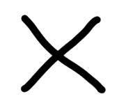

Read more on our exhibition at Bjiernkorf


Hello 🖐
We are Precious Plastic.
Precious Plastic is a global community of hundreds of people working towards a solution to plastic pollution. Knowledge, tools and techniques are shared online, for free. So everyone can start (yes, you too!).
We are independent, poor but free :)
Hundreds of people all over the world contribute to the project with their skills & knowledge, single or monthly donations.
Precious Plastic was started in 2013 by Dave Hakkens and is now at its third iteration (version) counting on dozens of people working on the project, remotely or on site (somewhere below sea level in the Netherlands).
Join the fight against plastic pollution.